Playa del Carmen is a beautiful beach town just a couple hours from Cancun. Coming here for a long weekend, it felt like a nice resort with all the touristy vibes but a bit more secluded than the most popular destinations, making for a perfect getaway. Having been to Mexico City before, I saw some familiar hints of the city – the motorcycles, square cobblestone streets, smaller cars, humidity, colorful houses, cats wandering around. But of course, Playa del Carmen was a delightfully unique experience of its own.
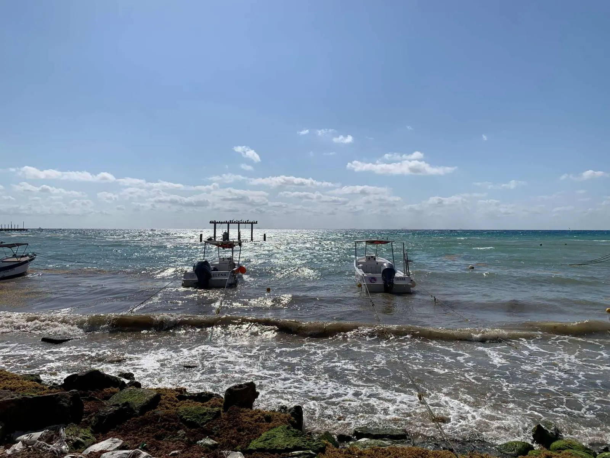
There wasn’t necessarily one thing in particular that stood out to me about Playa del Carmen. The beaches in the downtown area were not mind-blowing (in fact, they smelled a little fishy and had a lot of seaweed) – if you want nice beaches, you’ll probably want to venture out of the downtown area. The food was certainly delicious though – the cochinita pubil (traditional Yucatec Mayan slow-roasted pork) tacos and the açaí bowls are a must-try. But the best part for me was the tropical, carefree vibes – the bougie coffee shops serving lattes with exotic milks and spices, the smell of seaweed and the salty air, the live music from the Mexican restaurants along Quinta Avenida, the calm ocean views and palm trees, the lush trees and sounds of tropical birds, the feeling of the gentle warm breeze on your skin, and the golden glow of the late afternoon reflecting on the rooftop pool overlooking the deep blue and aqua colored ocean as the hot sun phased into the relieving coolness of the early evening.
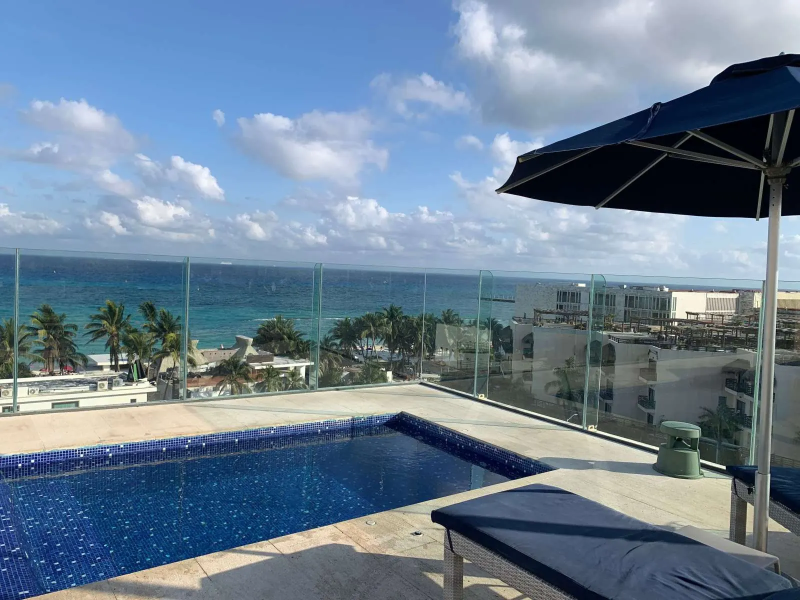
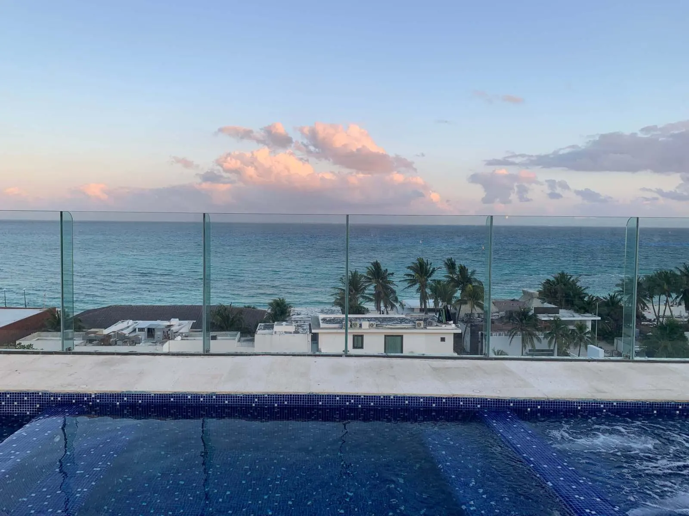
All the stresses of work and the daily grind seemed to melt away as soon as I stepped out of the airport into this bright and breezy coastal resort town!
As the focus of our trip was to relax and enjoy and we were only there for 3 days, we certainly did not check off all the boxes for things you can do here, and we opted to stay local rather than venture out too far from the downtown area. So if you are looking for a longer/more adventurous itinerary, including the ancient Mayan ruins (e.g. Chichen Itza, Tulum), the beach clubs, Cozumel, and Isla de Mujer, definitely look into those too. If I had one more day here I would have loved to do a day trip to Cozumel, which looks like it has amazing beaches and snorkeling.
Some travel tips:
Cash: Most places take credit card, but you’ll want to have some cash on hand for tips (the general rule seems to be 10% for meals and drivers, and 10-20% for a tour guide). There are plenty of ATMs where you can exchange for pesos here, so don’t worry if you’re not able to exchange beforehand.
Since this is a pretty foreigner-friendly place, many people can speak decent English, and we did not really need to know Spanish to get around. That said, there are plenty of locals who don’t speak English well and it certainly helps to know some Spanish words (and I’m sure the hosts would be delighted to know they can speak Spanish with you!).
Some Spanish words I learned here:
- Agua mineral/agua con gas (sparkling water) vs. agua natural (still water)
- La cuenta (the check/bill)
- Propina (tip)
- Cambio (change $$)
Definitely bring all the beach gear – reef-safe sunscreen, a hat, sunglasses, flip-flops, and sandals (though of course you can find these here if you forget anything). In early March, when we went, it was bright, warm, and humid – up to the 80s. Your clothes might stick to your skin, but I wouldn’t say that it was unbearably humid. And it wasn’t too crowded, so in my opinion spring is a great time to visit Playa del Carmen.
Finally – avoid drinking the tap water! I would recommend buying bottled water at the multiple 7-Eleven convenience stores rather than at restaurants, as restaurants will charge considerably more.
Day One: Arrival
To get from the airport to Playa del Carmen, the cheapest/best way is to take the red ADO bus – it was about 250 pesos or $25 each way (at the time of this writing). You can buy tickets at the airport and the bus station.
If you’re staying for a short period of time, I would recommend staying near downtown. We stayed at an Airbnb in downtown on Calle 32 Norte, which is conveniently located within walking distance to many places and just a 5 minute walk from the beach. Our airbnb also had a balcony with a hammock and beach chairs and view of the ocean, which was incredible – we spent a good afternoon or two just laying there, reading a book or soaking in the hot tub.
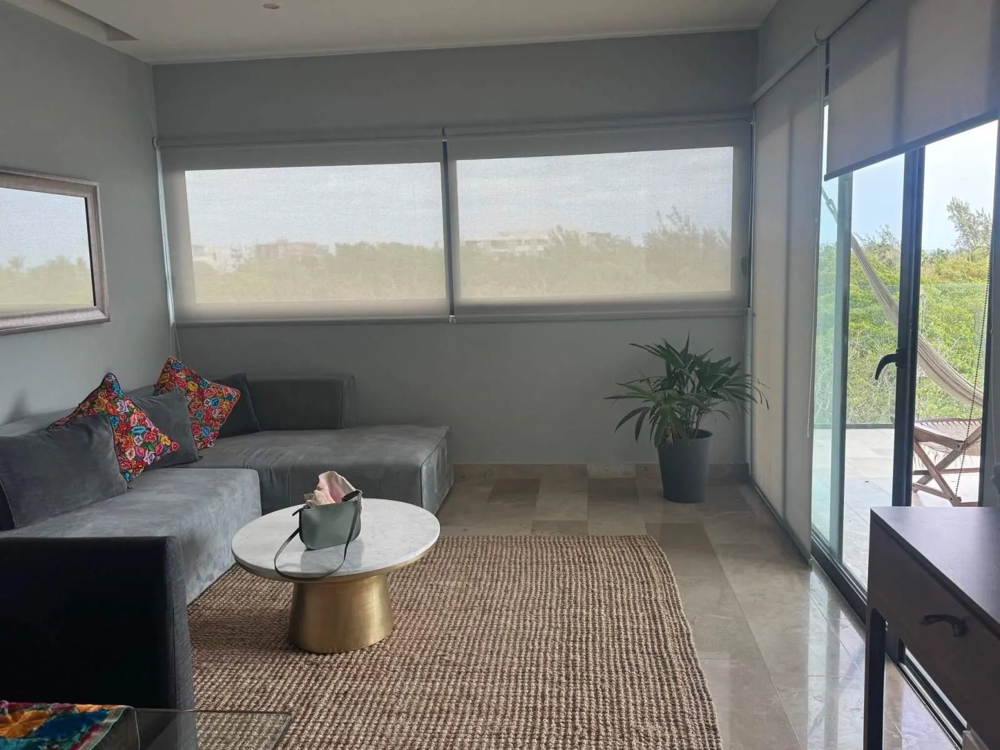
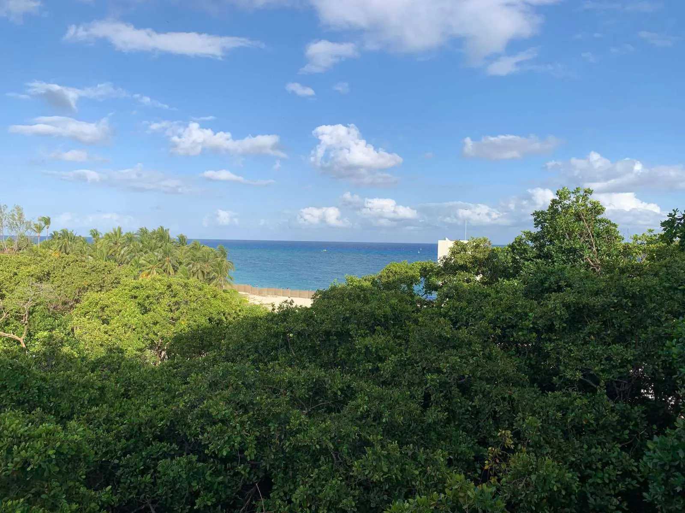
When you come to Playa del Carmen you won’t miss Quinta Avenida (Fifth Avenue), a touristy street with shops and restaurants and people selling you tours (at least they weren’t aggressive in my experience, they just ask you once and then leave you alone). There were many stores that appeared to be chain stores – drugstores selling drugs that you perhaps wouldn’t find in the States, candy stores, ice cream (e.g. Aldo’s for gelato), lots of souvenir shops selling sombreros, magnets, shot glasses, etc. Surprisingly the one tourist item we had a hard time finding was postcards, and the few that we did find seemed pretty generic and of places we didn’t visit (Tulum, Isla de Mujeres). We passed by a mall with international chain stores like Levi’s; I recommend checking out the chocolate/candy store which has delicious Mexican chocolates with various flavors (70% cacao, vanilla, cinnamon (canela), chili habanero), with tiny samples so that you can try them all!
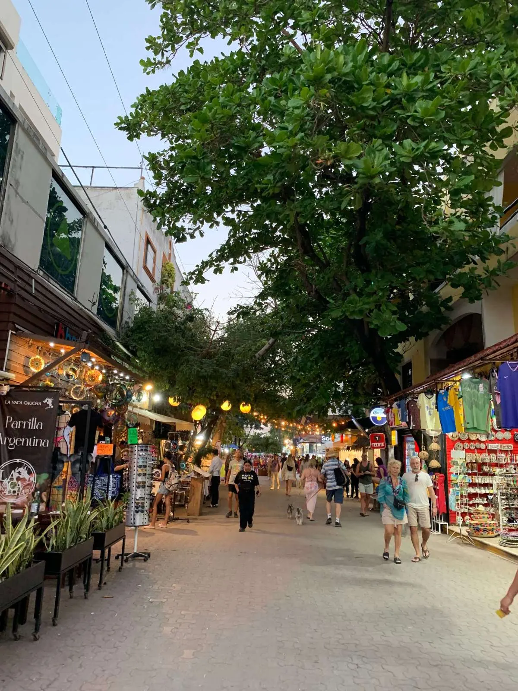
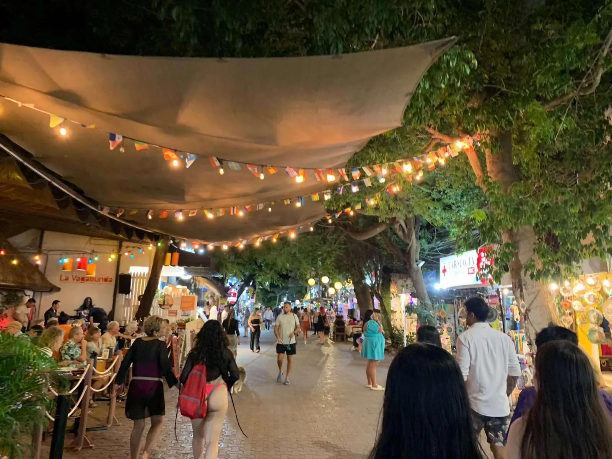
The day we arrived, we enjoyed our first dinner at Amate 38 – they had amazing pork dishes (cochinita pubil – shredded pork served with pink colored peppers and black beans that you can make tacos with) and apple soda served in a glass (delicious and not too sweet!).
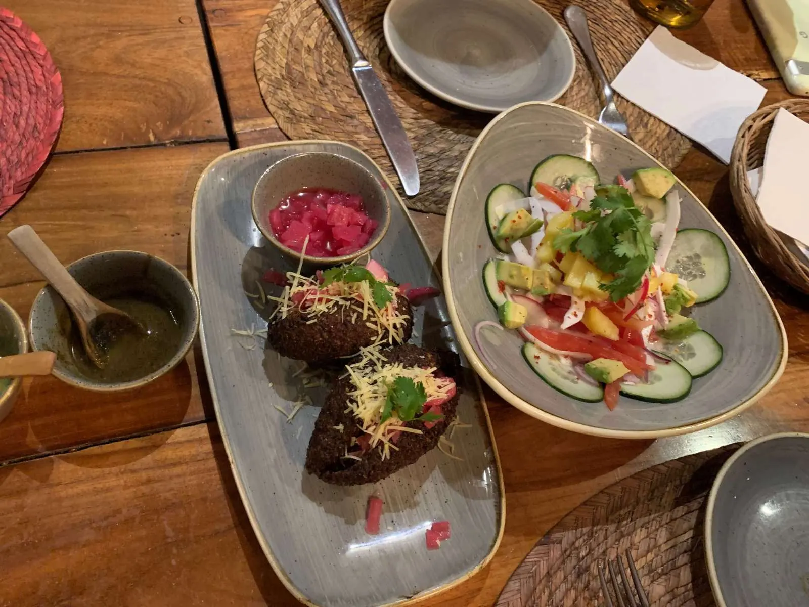
We then went out for drinks somewhere nearby. Though I didn’t jot down the name of the place, there are certainly plenty of options to choose from!
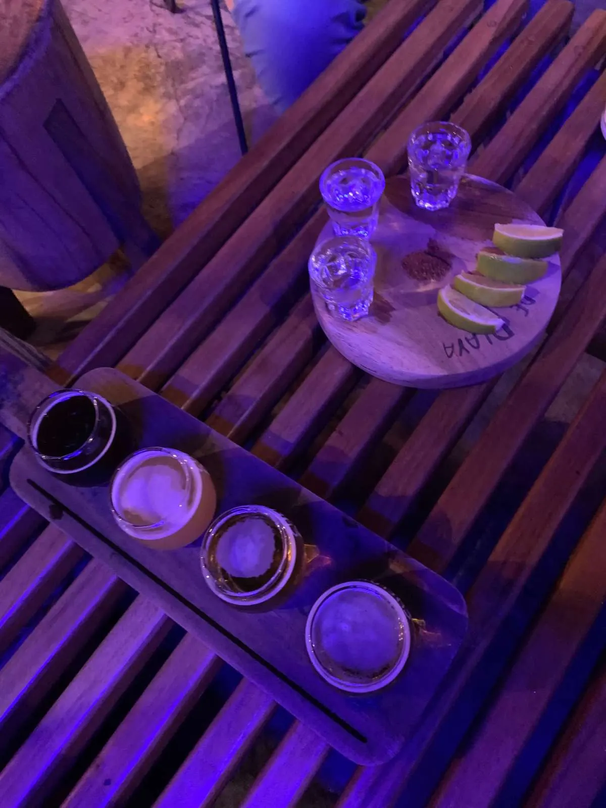
Day Two: The Cenotes!
If you’re craving coffee and açaí bowls, check out Arcana, which specializes in exotic açaí bowls and bougie coffee/lattes that were not overly sweet – exactly what I was looking for in an early morning latte.
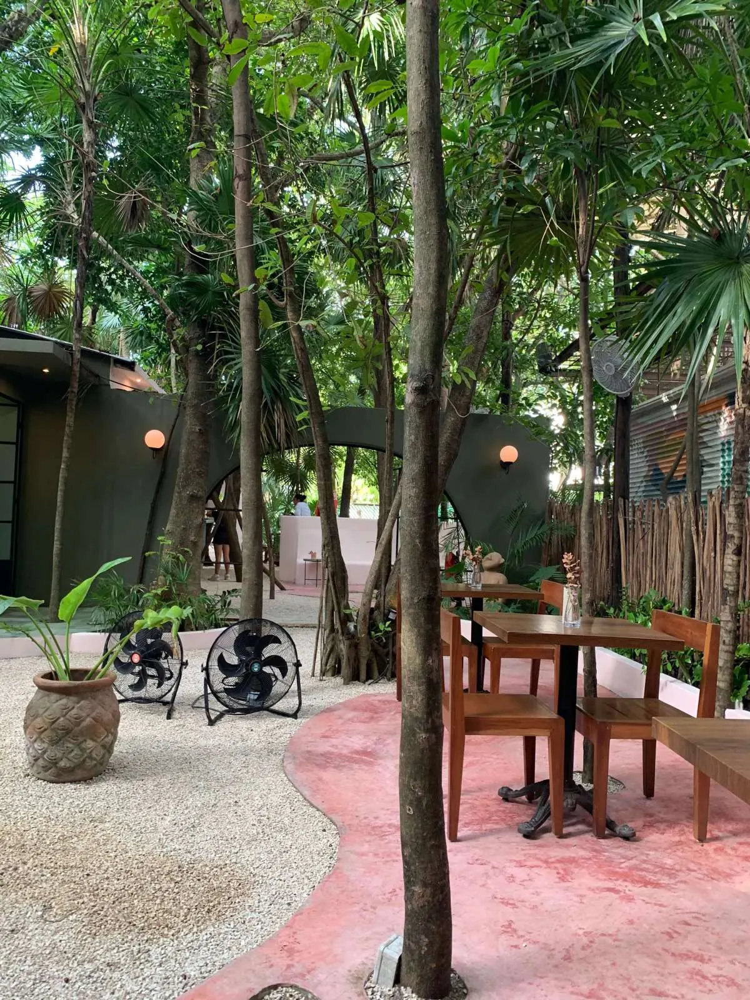
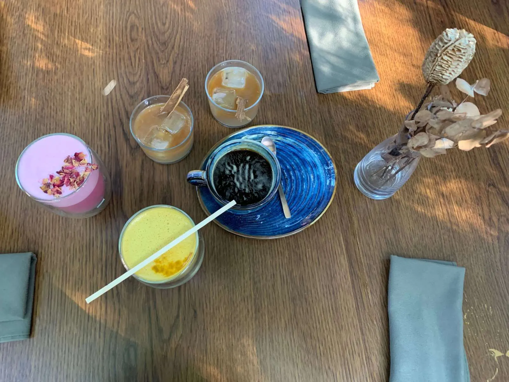
Swimming/hiking in the cenotes is a must do while you are here! Cenotes are natural freshwater swimming holes filled with groundwater. They may be part of a cave. There are hundreds of cenotes near Playa del Carmen (and other parts of Mexico), and plenty of options for tours too. We did the Rio Secreto tour and enjoyed the experience.
The whole experience took about 2-3 hours. We were picked up at 11:40am from a hotel nearby (you can choose from several pickup locations) and dropped off at the entrance. We watched a short video, put on a wetsuit, helmet and life vest, grabbed a walking stick, took a 15-minute van ride into the jungle, took a short walk through the jungle, and finally entered the cave. We spent about an hour in the caves. It goes by fast but I would recommend not going on an empty stomach (speaking from experience!). We swam a little bit but not fully – the exploring included hiking over rocks, wading and swimming through caverns, but I didn’t get my hair wet. You have the option to not wear a wetsuit, but everyone on our tour did, and I would recommend doing so since you’re in the caves for a while and it can get pretty cold – but with the wetsuit the water was cool to the touch. (And this is probably obvious, but don’t drink the water – even though it’s freshwater that goes into the sea eventually, it has calcite in it which apparently is a laxative.)
In the cavernous waters, we saw catfish – the biggest sign of life down there – which mostly live on guano (aka bat poop). We also saw micro shrimp, bats (3 small bats perched on the ceiling!) and a spider. We saw the stalactites (hanging down from the ceilings – they are hollow since water drips through them) and stalagmites (coming up from the ground). We even saw tree roots too (this particular cave wasn’t that deep, other cenotes may be deeper). Fun fact: The Yucatán Peninsula has 25% of Mexico’s fresh water.
At one point we all turned our headlights off and sat in the pitch dark and silence in the water for a minute, which was a bit of a surreal experience. The Mayans saw these caverns as sacred and used to do ceremonies down here for days, and emerge back into the sunlight as a new person. Per our tour guide, the current owner of the caves discovered the caverns while following guano down a sinkhole – and is now probably a very rich man.
Another unexpected highlight of the tour (and arguably the trip) came after we emerged from underground – we saw a group of coatis on the road nearby, running towards the forest! They are closely related to the raccoon – and adorably cute.
By now we were quite hungry for the buffet, which consisted of local Yucatán food – cochinita pubil (traditional Yucatec Mayan slow-roasted pork), nopales (cactus), verduras (vegetables), pollo (chicken), salsa verde and sour cream – with horchata and other drinks.
—
Dinner was tacos at El Fogón. Apparently the place is pretty popular, as we had to wait in a long line to get a table. I was a bit disappointed that the apple soda here was sweeter and served in a plastic bottle, but the nopales and carnitas tacos were pretty good.
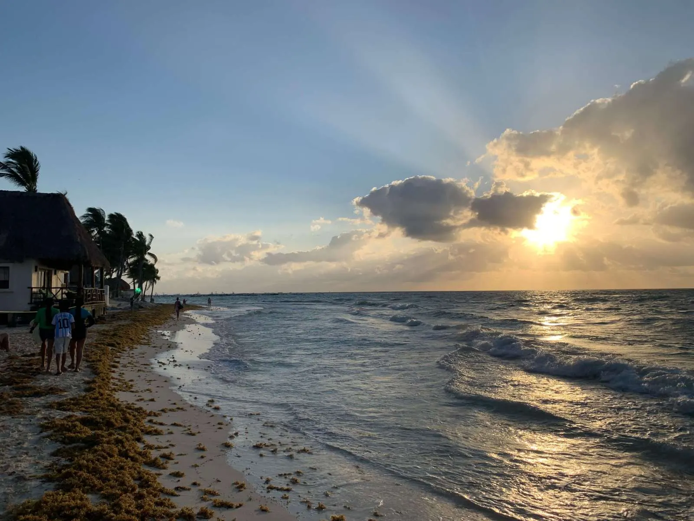
We ended the night with cocktails at Marmorata. I liked how they had a small intimate setting, and they also do tasters so you can try different drinks.
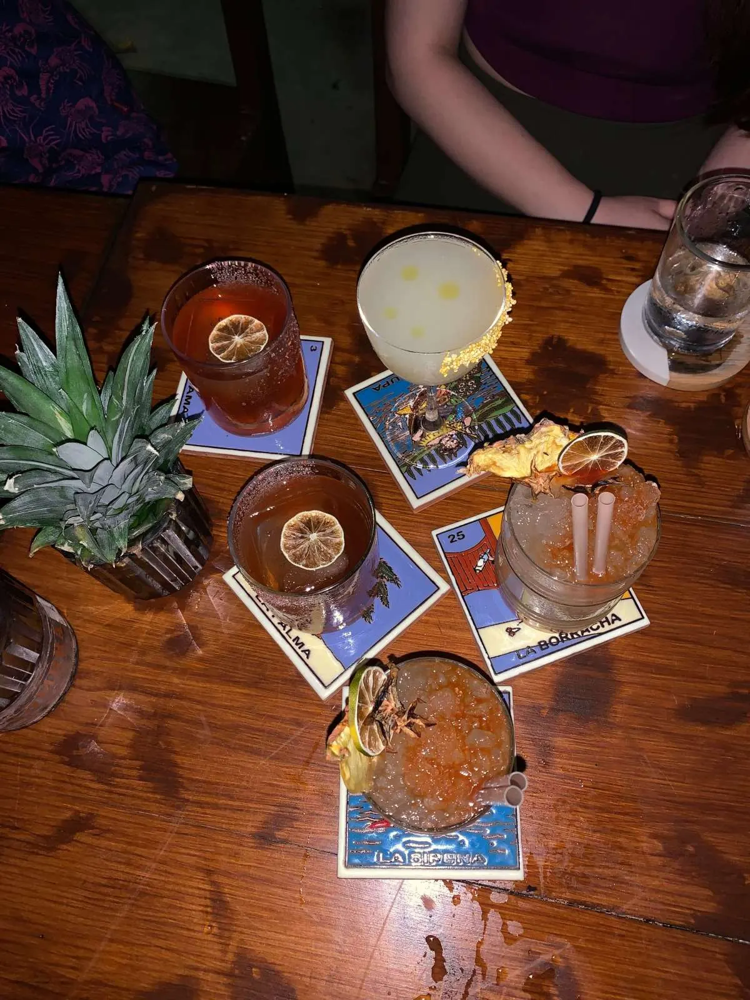
Day Three: More Food, Shopping, and Exploring
We started off the day with coffee, and ventured a bit away from Quinta Avenida and the beach. I recommend having lunch at San Carnitas. It was here that we had the long-awaited tepache – fermented pineapple rind – a nonalcoholic, fizzy drink that tastes like soda but is half as sweet and twice as delicious. We’ve been looking for this drink since we got here, and were surprised that many places did not serve it. I truly don’t know why fermented sodas aren’t more of a thing. They served pork rinds as appetizers, and their birria (marinated, slow-cooked beef) tacos in a fried tortilla are amazing. I also recommend the flan for dessert.
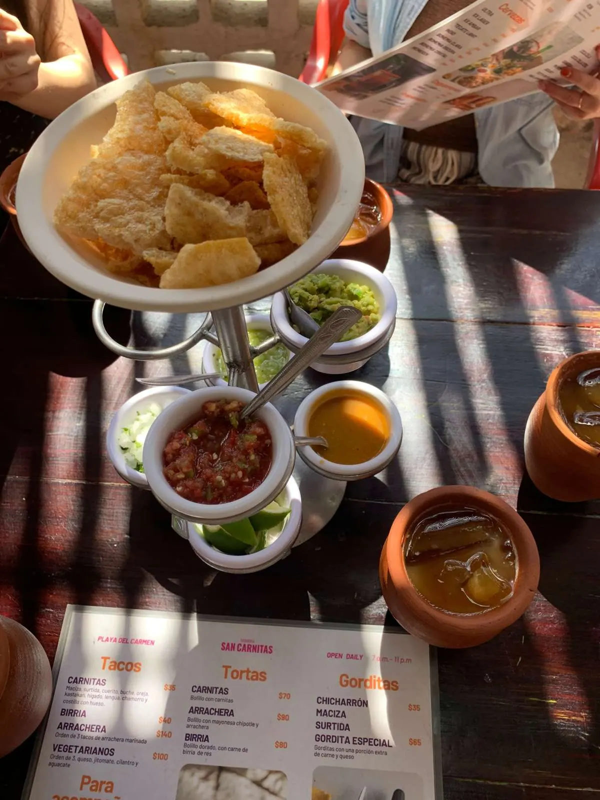
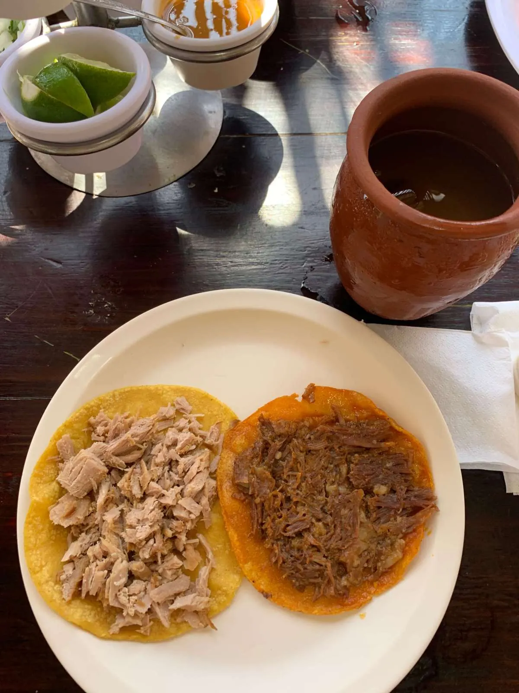
We checked out a large grocery store (Mega Soriana), which is an interesting excursion in itself. You’ll quickly notice some differences from U.S. grocery stores, including the “Excess calories/sodium/sugar” signs on pretty much all processed foods. We could not ignore the cheaper eggs (we were dealing with a serious egg shortage in the U.S. at the time, with eggs priced at as much as $20/carton in NYC), nor the 50-cent avocados that were perfectly ripe and had the ideal smooth texture on the inside. Also do yourself a favor and get some De la Rosa Mazapán peanut candies.
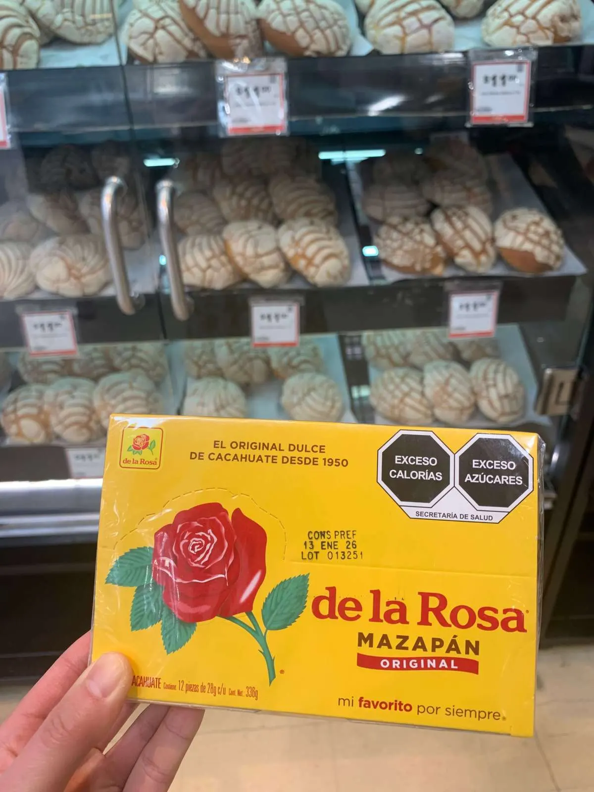
We went back to Quinta Avenida to do some shopping, and came across a demonstration in honor of International Women’s Day (which spiced things up!).
For amazing seafood, check out La Bamba Jarocha for dinner. I enjoyed the seafood soup, seafood paella, and ceviche (which includes various seafood – the shrimp is cooked).
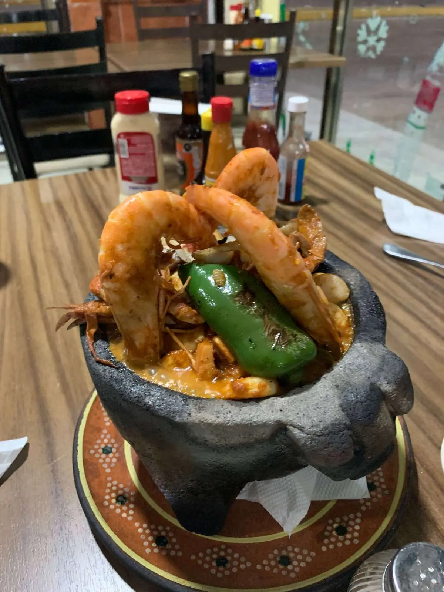
And the Coke was so good! They served it in a glass bottle and cup with ice.
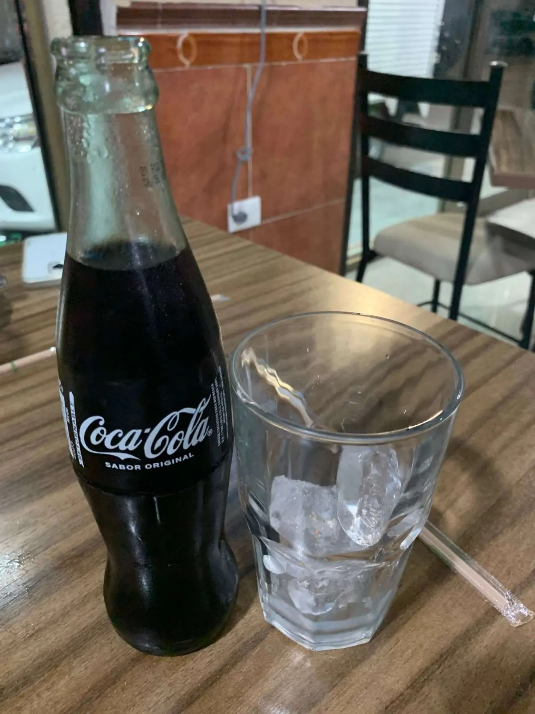
Beach clubs are a thing here, and if you’re up for that adventure there are likely some options for you. (You can also chill on the beach chairs at these clubs during the day, for a nontrivial fee.) We could hear music playing and people cheering on a Friday or Saturday night from Mamita’s Beach Club nearby.
The weekend we were there, there happened to be a music festival going on on the beach. However, we were not prepared for the music to last all night (until 8am!). Because we had an ocean view, I think we were just a little unlucky in that we were facing the source of the noise and the loud boom-boom-boom of the music went straight to our window. It was manageable at 11pm, but suddenly seemed to get louder around 1am because it woke me up – I relied on headphones to be able to get some sleep that night. So it might be a good idea to look up the calendar for the weekend you plan to go and see if there might be any music festivals happening.
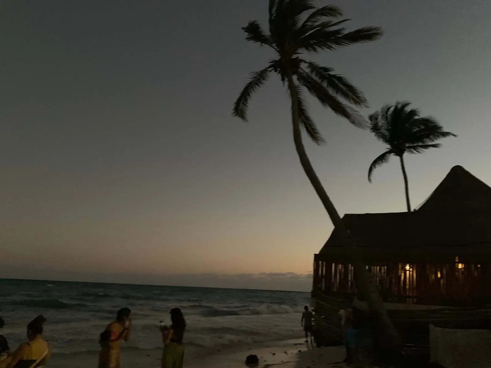
Day Four (Sunday): Until Next Time!
The mornings here are beautiful and peaceful. I definitely recommend an early morning beach walk or walk down Quinta Avenida.
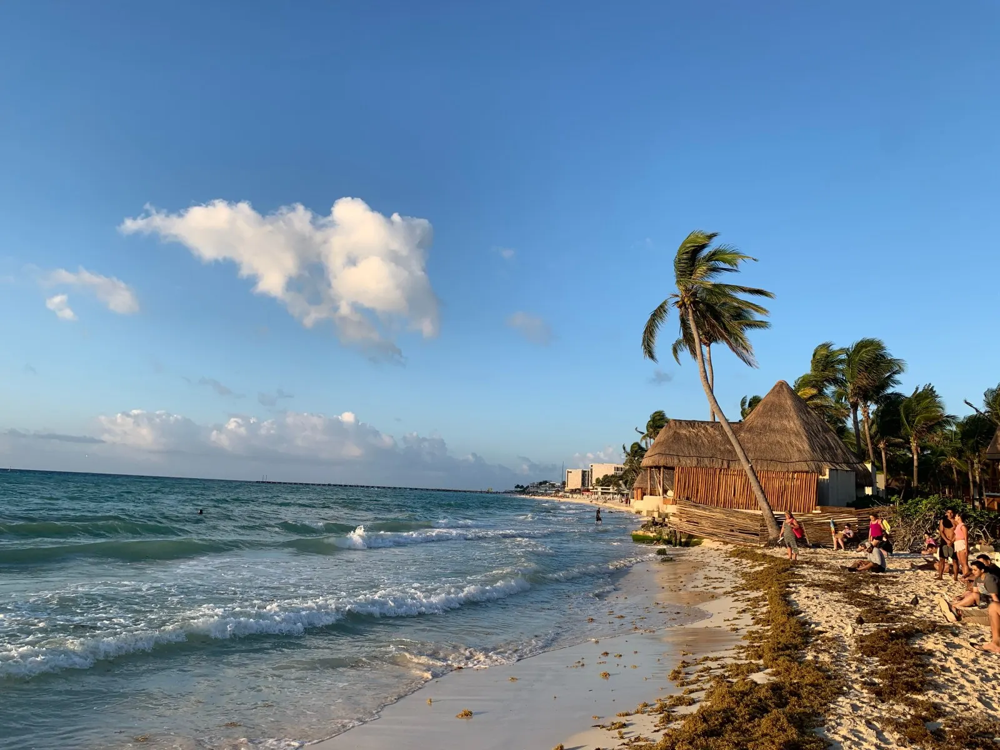
We went to the Bistro Playa for açaí bowls, burritos, and desayuno mexicano (chorizo with eggs, beans, and chilaquiles), followed by a smoothie for a light lunch (I liked the Start Your Day smoothie which has passion fruit, banana, orange juice, and yogurt) before heading back to the airport.
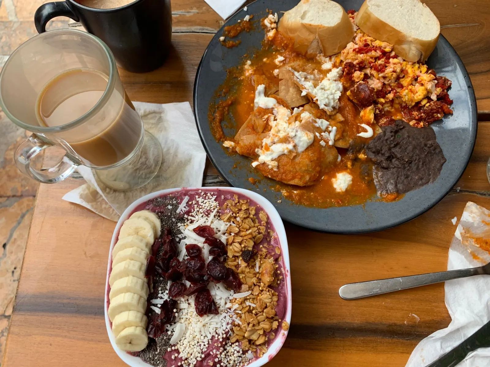
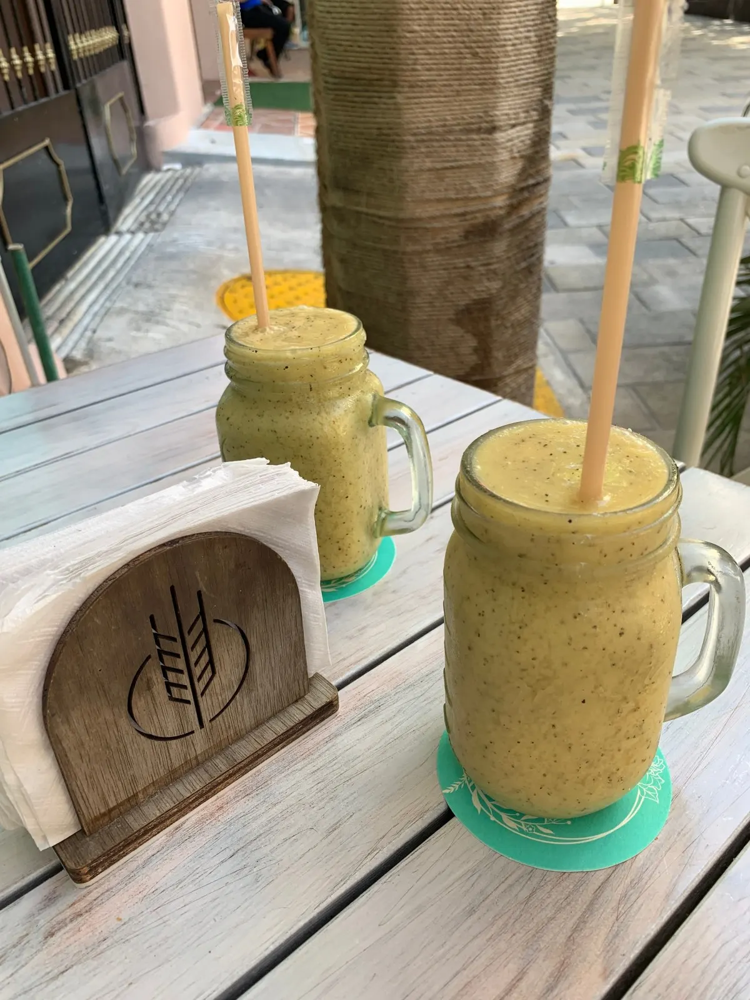
I would have loved to stay here for longer, but even for just 2-3 days, Playa del Carmen is an amazing place for a weekend getaway – I certainly left feeling a lot more refreshed and rejuvenated.
Have you visited Playa del Carmen? Feel free to drop in the comments below any other amazing places nearby that are must-visits!